댕겨왔습니다..............OTL
출발전에 그래도 경험치도 초금 쌓였겠다
바보짓좀 안하게 해달라고 빌었건만;;;
첫날부터 대박이었던 프랑스 여행;;;
우선 음식사진 방출합니다~^^**
둘째날 동행한 아가씨들이랑 같이간 생 제르맹 지역에있는 레스토랑
양파수프
스테키는 좀 질겼음;;
같은날 저녁 에펠탑 근처에서 사먹은 감자튀김
이건 숙소에서 만난 다른아가씨한테 추천받은건데
진짜 맛나요~!!!! +_+
에펠탑맞은편 회전목마 있는곳 옆에 매점??에서 팝니다
가격은 3.50유로 소스 케찹이랑 마요네즈 둘중 어떤걸로 할거냐구 할때
둘다 달라고하세요
그냥 감자튀김에 마요네즈 들어간건데 왤케 맛있어 ;ㅂ;
샹젤리제 거리에 있는 라 뒤레
마카롱~마카롱~
셋째날 내 저녁은 이거였다능;;
엄청 달아요//근데 맛나 ㅜㅜ
진짜 노천카페 최고!! 거리거리에 엄청나게 나와있는 야외테이블!!+_+
앉아서 사람구경하고 낙서도 하고~^^
저렴한 가격에 배불리 먹을수있는 곳^^
안쪽 테이블에 들어가기전 카운터에서 메인메뉴를 주문하면
델렁 접시에 고기만 올려주고 그외 야채 감자는 부페식(오른쪽 접시)
야채 잔뜩먹을수있어서 좋습니다 ㅎㅎ
전 몽마르트묘지 근처 가게 들렸어요
묘지돌고 일행이랑 헤어져서 출발전에
스타벅스에서 휴식
아이스카페라떼
유리너머로 보이는 물랑루즈~^^**
요거도 대따 유명한 젤라또 아슈크림 가게
여기 맛나요 ㅜㅜ
내가 고른건 요거트 + 커피
요래요래 꽃모양을 만들어주는게 포인트^^
커피는 그냥그냥 이었는데 요거트 아이스크림이 너무맛있어요 ㅜㅜ
(첨에는 꽃모양 만들어주는거 이왕 시각적으로 이쁘게 망고+딸기 조합을 생각했으나;
입으로 들어갈거(........) 모양보다는 내 입맛이 더 중요하다능;;;;)
그냥 털레털레헤매다가걷다가 배고파서 들어간 일명 동네빵집^^;;
요건 오페라역 근처같은데;;; 대실패;;
엄청 배고팠는데;;; 케키 파니니 둘다 반도 못먹고 패배
케키는 진짜 너무너무너무너무 달아서 ;ㅂ; 못먹고;;
파니니는 넘 맛없었음;;;;
기본적으로 프랑스음식이 제게는 뭐든 너무 진하다고 느껴지더라구용;;
이번에도 요거트랑 에........한놈은 뭐였찌???OTL
이날 비도오고 날도춥고해서 처음 몇입은 정말 맛나게 먹었는데
점점 치즈가 식으니까 늬끼해져서
이것도 반정도 먹다가 패배......OTL
바토무슈 유람선 타러가기전에 시간기다리믄서
역 바로앞 카페
여기 서빙하시던분 생긴것도 샤방하고
목소리가 진짜 무슨 옥구슬 굴러가듯//(남자분입니다;;)
봉수와~마담~이러는데 엄훠////
프랑스어가 이쁘다는게 이런거구나 싶었다;;;
사진찍어올걸.......쩝;;;;
여튼 쇼콜라 쇼입니다 ㅋㅋㅋ
이 자리에 앉아서 맞은편에 에펠탑이 보였었다
에펠탑 구경하믄서 홀짝홀짝~
6일째 공항가기전 숙소에서 나와서 동네마실
실내가 너무 귀여웠던 찻집^^
노트만들기~^^
출발전에 그래도 경험치도 초금 쌓였겠다
바보짓좀 안하게 해달라고 빌었건만;;;
첫날부터 대박이었던 프랑스 여행;;;
우선 음식사진 방출합니다~^^**
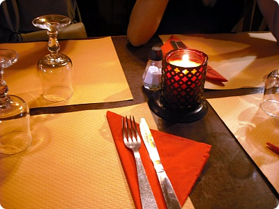
둘째날 동행한 아가씨들이랑 같이간 생 제르맹 지역에있는 레스토랑
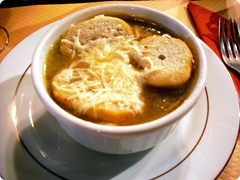
양파수프
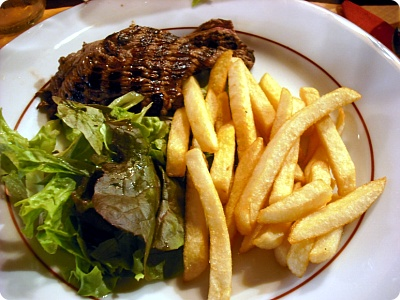
스테키는 좀 질겼음;;
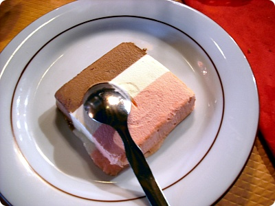
후식 아이스크림^^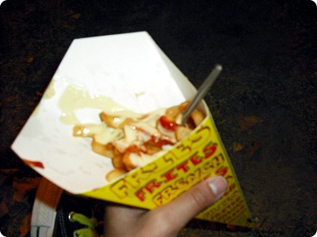
같은날 저녁 에펠탑 근처에서 사먹은 감자튀김
이건 숙소에서 만난 다른아가씨한테 추천받은건데
진짜 맛나요~!!!! +_+
에펠탑맞은편 회전목마 있는곳 옆에 매점??에서 팝니다
가격은 3.50유로 소스 케찹이랑 마요네즈 둘중 어떤걸로 할거냐구 할때
둘다 달라고하세요
그냥 감자튀김에 마요네즈 들어간건데 왤케 맛있어 ;ㅂ;
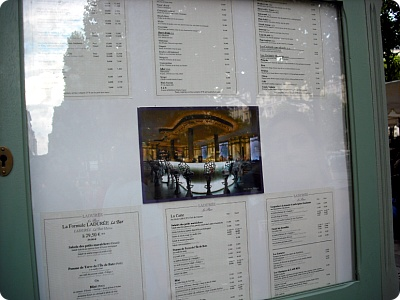
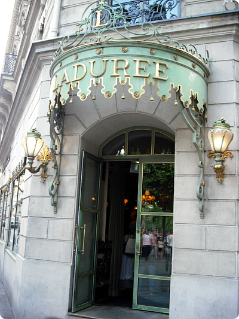
샹젤리제 거리에 있는 라 뒤레
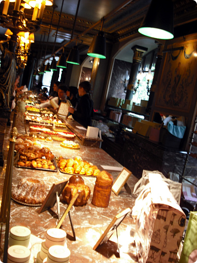
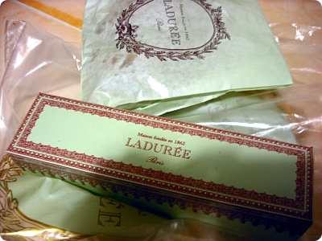
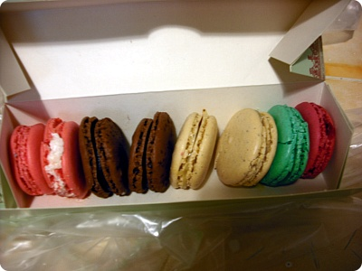
마카롱~마카롱~
셋째날 내 저녁은 이거였다능;;
엄청 달아요//근데 맛나 ㅜㅜ
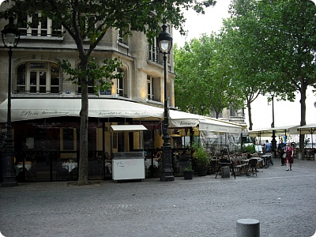
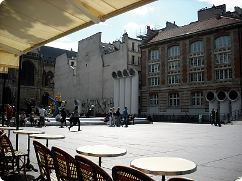
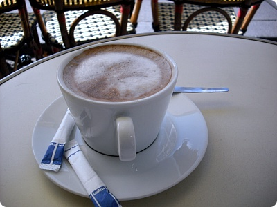
퐁피두센터 근처 커피숍 핫쪼코~진짜 노천카페 최고!! 거리거리에 엄청나게 나와있는 야외테이블!!+_+
앉아서 사람구경하고 낙서도 하고~^^
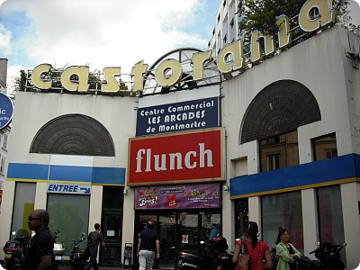
요것도 유명한체인저렴한 가격에 배불리 먹을수있는 곳^^
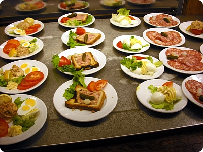
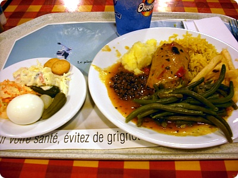
샐러드랑 음료를 골라 쟁반에 담고(샐러드가 의무는 아니에용)안쪽 테이블에 들어가기전 카운터에서 메인메뉴를 주문하면
델렁 접시에 고기만 올려주고 그외 야채 감자는 부페식(오른쪽 접시)
야채 잔뜩먹을수있어서 좋습니다 ㅎㅎ
전 몽마르트묘지 근처 가게 들렸어요
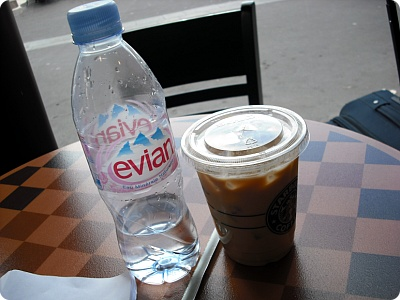
묘지돌고 일행이랑 헤어져서 출발전에
스타벅스에서 휴식
아이스카페라떼
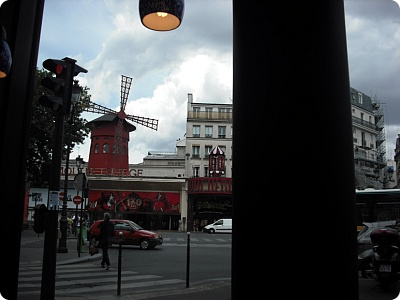
유리너머로 보이는 물랑루즈~^^**
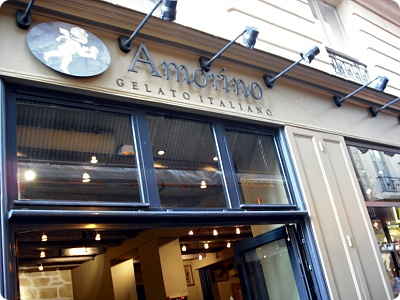
요거도 대따 유명한 젤라또 아슈크림 가게
여기 맛나요 ㅜㅜ
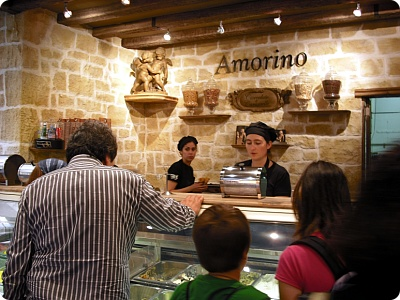
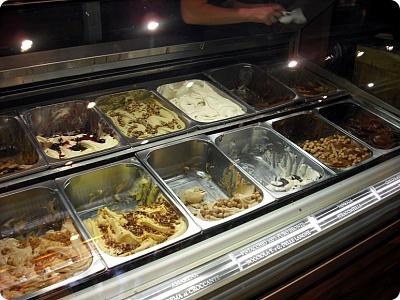
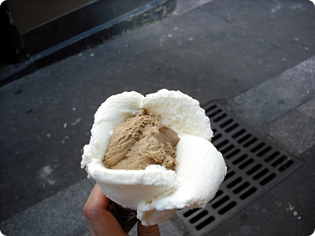
내가 고른건 요거트 + 커피
요래요래 꽃모양을 만들어주는게 포인트^^
커피는 그냥그냥 이었는데 요거트 아이스크림이 너무맛있어요 ㅜㅜ
(첨에는 꽃모양 만들어주는거 이왕 시각적으로 이쁘게 망고+딸기 조합을 생각했으나;
입으로 들어갈거(........) 모양보다는 내 입맛이 더 중요하다능;;;;)
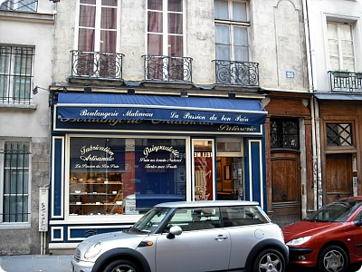
그냥 털레털레
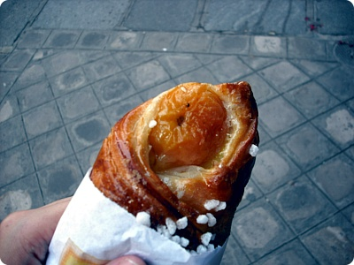
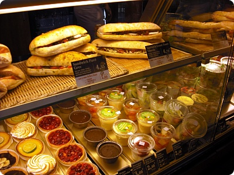
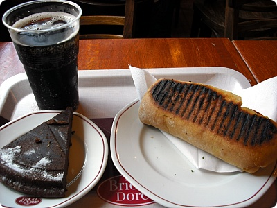
요건 오페라역 근처같은데;;; 대실패;;
엄청 배고팠는데;;; 케키 파니니 둘다 반도 못먹고 패배
케키는 진짜 너무너무너무너무 달아서 ;ㅂ; 못먹고;;
파니니는 넘 맛없었음;;;;
기본적으로 프랑스음식이 제게는 뭐든 너무 진하다고 느껴지더라구용;;
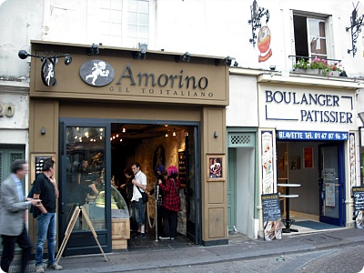
5일째 되는날 다른지역 헤매다가 또 발견한 아슈크림 가게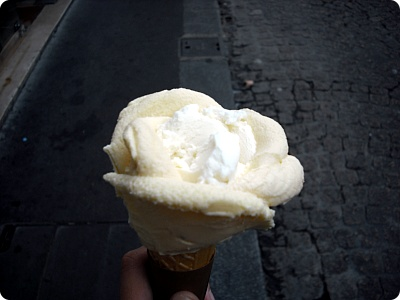
.....그래서 또 사먹었어요(←;;;)이번에도 요거트랑 에........한놈은 뭐였찌???OTL
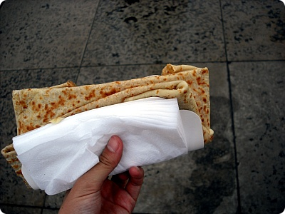
크레페에 안에 치즈들은것이날 비도오고 날도춥고해서 처음 몇입은 정말 맛나게 먹었는데
점점 치즈가 식으니까 늬끼해져서
이것도 반정도 먹다가 패배......OTL
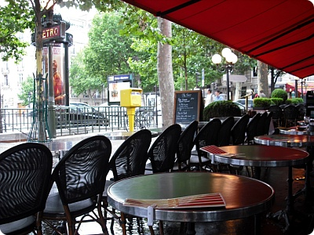
바토무슈 유람선 타러가기전에 시간기다리믄서
역 바로앞 카페
여기 서빙하시던분 생긴것도 샤방하고
목소리가 진짜 무슨 옥구슬 굴러가듯//(남자분입니다;;)
봉수와~마담~이러는데 엄훠////
프랑스어가 이쁘다는게 이런거구나 싶었다;;;
사진찍어올걸.......쩝;;;;
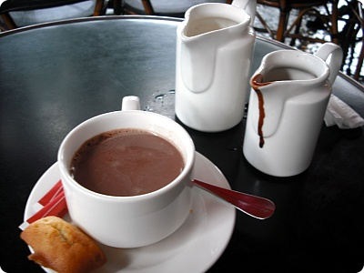
여튼 쇼콜라 쇼입니다 ㅋㅋㅋ
이 자리에 앉아서 맞은편에 에펠탑이 보였었다
에펠탑 구경하믄서 홀짝홀짝~
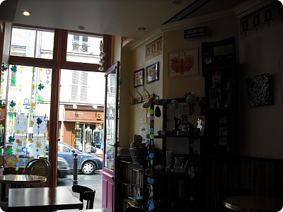
6일째 공항가기전 숙소에서 나와서 동네마실
실내가 너무 귀여웠던 찻집^^
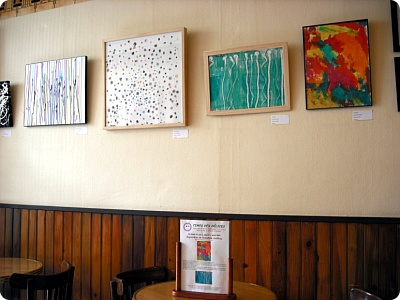
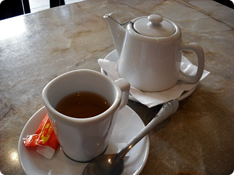
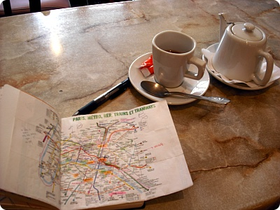
얼그레이 시켜놓구 시간때우믄서노트만들기~^^
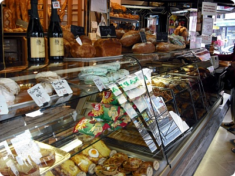
그리구 다시 빵집 들려서...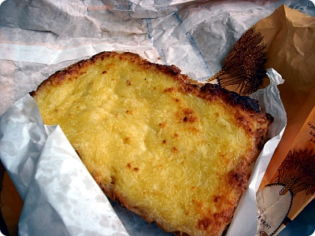
공항에서 저녁겸 먹은 토스트인데
이것도 늬끼해................OTL
돌아댕기믄서 정말 요리종류도 많고 식재료도 풍부하고
아이쿳 과연 프랑스구나~했는데
어째 내가 먹은건 전부 빵 아님 아슈크림;; 아님 군것질거리들^^;;
혼자 돌아댕기믄서 "뭐야 나 완전 お子様(어린애)아냐;;" 란 생각을
살짝 했숩니다;;;
+여행후기 링크 추가^^**
2009.07.03~07.08::프랑스-파리...①
2009.07.03~07.08::프랑스-파리...②
2009.07.03~07.08::프랑스-파리...③
2009.07.03~07.08::프랑스-파리...④
2009.07.03~07.08::프랑스-파리...⑤
이것도 늬끼해................OTL
돌아댕기믄서 정말 요리종류도 많고 식재료도 풍부하고
아이쿳 과연 프랑스구나~했는데
어째 내가 먹은건 전부 빵 아님 아슈크림;; 아님 군것질거리들^^;;
혼자 돌아댕기믄서 "뭐야 나 완전 お子様(어린애)아냐;;" 란 생각을
살짝 했숩니다;;;
+여행후기 링크 추가^^**
2009.07.03~07.08::프랑스-파리...①
2009.07.03~07.08::프랑스-파리...②
2009.07.03~07.08::프랑스-파리...③
2009.07.03~07.08::프랑스-파리...④
2009.07.03~07.08::프랑스-파리...⑤